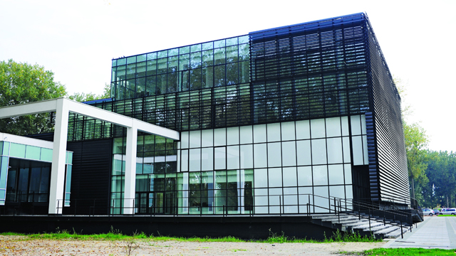

Novi Sad is the capital of the Autonomous Province of Vojvodina and Serbia’s second-largest city. Its municipal population is over 370,000. The city is located on the banks of the Danube River and Danube-Tisa-Danube Canal, while facing the northern slopes of Fruška Gora Mountain. Since it was founded in 1694, Novi Sad became the centre of Serbian culture and earned its nickname Serbian Athens. Today, NOVI SAD is a large industrial and financial centre and one of the biggest construction sites in the region. It is also well-known as a multiethnic and multi-religious city, with quiet and peaceful streets and high level of tolerance. The climate in Novi Sad is moderate continental, with an average daily high temperature 26.1˚ (78˚F) and low 15˚C (57˚F) in June.
International „Nikola Tesla“ Airport Belgrade is about 75 km apart. It has connections to/from all major European airports. Low cost airlines fly to Belgrade, also. National air-carrier is JAT Airways (http://www.jat.com/active/en/home.html)
Epecially contracted for the conference participants transfer, (car or mini-van) to Novi Sad, 1 hour trip – price about 20-30 EURO, (booking is needed at least one day a head), recommended.
Railway/Bus station stop (0,5 hour trip – price about 2.- EURO) and then take bus to Novi Sad (1,5-2 hours trip – price about 7.- EURO). Bus Belgrade-Novi Sad-Belgrade runs during peak hours every 15 min, every 30 min during the rest of the day and every 1 hour during late evening hours until midnight. For plane schedule, please visit www.amadeus.net , www.skyscanner.net For information about arrivals/departures: http://www.beg.aero/welcome.54.html
Novi Sad is located at the main north-south railway line from Budapest (Hungary) to Belgrade and further to the south Sofia (Bulgaria), Skopje (Republic of Macedonia) or Thessaloniki (Greece). All trains stops in Novi Sad. For participants from east or west, take train to Belgrade and than train or bus to Novi Sad (1,5-2 hours trip – price about 7.- EURO). Bus Belgrade-Novi Sad-Belgrade runs during peak hours every 15 min, every 30 min during the rest of the day and every 1 hour during late evening hours until midnight. For train schedule, please visit www.bahn.de.
Regular bus lines from Subotica (north), Belgrade (south) and Zrenjanin (east) exists with frequent departures. International lines from Paris, Munich, Frankfurt, Zurich, Vienna, Ljubljana, Zagreb, Banja Luka also stops in Novi Sad. (http://www.eurolines.com, http://www.eurolines.co.rs/Eng/index.php)
Novi Sad is located at the main E 75 (No.22) international highway (Budapest-Belgrade-Niš-Sophia) for travelers from north or south. For travelers from east, No. 7 main road connecting Timisoara-Jimbolia (Romania)-Zrenjanin-Novi Sad or No. 1-9 and No.7-1 Craiova-Resita-Moravita (Romania)-Vršac-Zrenjanin-Novi Sad is recommended. For travelers from west (Italia, Slovenia, Croatia, Bosnia&Herzegovina) take the main E70 (No.1) international highway up to Ruma crossing, than No.21 road north bound to Novi Sad. For information about travel, please visit: http://www.amss.org.rs/index_e.html
Novi Sad has a number of public bus lines connecting every part of the city with the center. Conference venue („Master“ Congress Centre) is by Novi Sad Fair and is served by the: Line 11 (circle line): Railway/Bus Station – Novi Sad Fair – Liman 4 – University Campus – Fish Market – Railway/Bus Station. Line 8: Novo naselje – Master Centre – Liman 4 – Liman 1 Line 5: Temerinski put – City centre – Novi Sad Fair – Avijaticarsko naselje For more details, please visit http://www.gspns.co.rs/ View Novi Sad, Serbia, Vojvodina in a larger map
Thanks to its excellent position on the Danube River and the crossroad of main roads, Novi Sad is linked to surrounding places and towns in a very good manner. It is situated alongside the main highway E-75, and the highway E-70 is about 70 kilometres (43miles) away in the south, towards Belgrade. Border crossings with Hungary are: Bački Breg (120 km i.e.75 miles), Kelebija (120 km i.e. 75 miles) and Horgoš (118 km i.e. 73 miles distant)Border crossings with Croatia are: Bezdan (112 km = 69 miles), Batrovci (90 km = 55 miles) and Bačka Palanka (40 km = 24 miles distant). Border crossings with Romania are: Srpska Crnja (101km = 62 miles), Vatin (129 km = 80 miles) and Kaludjerovo via Belgrade (199km =123miles distant). Border crossing with Bosnia and Herzegovina, Sremska Rača is 88 kilometres (54 miles) far away from Novi Sad.. Public transport Belgrade Airport
1. Valid passport/travel document; 2. Valid visa in the passport, if a Serbian visa is required for passport holders of the respective country; 3. Proof of sufficient funds for staying in Serbia. Sufficient funds are considered to be 50 Euros per day of stay, proved by possession of the appropriate amount of cash, bank statement, traveller's cheques, credit cards or a letter of guarantee; 4. Certificate of vaccination or a note that he/she has not contracted a contagious disease despite coming from an area affected by a pandemic, as defined by the information of the Ministry of Health. 5. If underage children are travelling with one of their parents, it is necessary to submit a relevant certified authorization by the other parent; or if the child is travelling with a third person such authorization is required from both parents or guardian; 6. It is recommended to have a health insurance for the period of stay in Serbia, covering possible medical costs to the amount of not less than 20,000 Euros. Before travelling to the Republic of Serbia, please check here whether you need a visa. Embassy or Consulate General of the Republic of Serbia abroad General visa requirements For Invitation letter, please contact secretariat Ee 2017 dee@uns.ac.rs
Visa information: without a visa up to 90 days: EU citizens, Albania, Andorra, Argentina, Australia, Belarus, Bolivia, BIH, Canada, Chile, Croatia, Costa Rica, Cuba, Holy See, Iceland, Israel, Japan, Kazakhstan, Rep. of Korea, Lichtenstein, Macedonia, Mexico, Montenegro, New Zealand, Norway, Russia, San Marino, Seychelles, Singapore, Switzerland, Tunis, Turkey and USA. All other nationalities need visa-how to apply: Here
The main purpose of our Info Centres is to deliver all the information related to the City of Novi Sad and its surroundings to tourists and to our fellow citizens. INFO CENTRE AT JEVREJSKA no. 10 Tourist Organisation of the City of Novi Sad disposes with two Info Centres. The first Info Centre is located in Jevrejska Street, on the way to the main bus and railway stations. It was moved from the old site, from Modena Street, in August 2013. This Info Centre has kept its multimedia function for promotion of events and it is available to all those who want to promote tourist, cultural, and economic events in Novi Sad. INFO CENTRE AT BOULEVARD OF MIHAJLO PUPIN no. 9 The second Info Centre is located on the way to Petrovaradin Fortress, Belgrade Quay, and the Danube. In addition to the main operations this Info centre enables conducting of professional practice and work with students from the Department for Geography, Tourism and Hotel Industry. The employees of the Info Centre keep records on the number of tourists who come to Novi Sad and countries they come from. When it comes to domicile population, their attention is drawn to the current events in the city (cinemas, museums, galleries, etc.).
The conference will be organized in the premises of the University of Novi Sad, a modern facility with large exhibition area.
